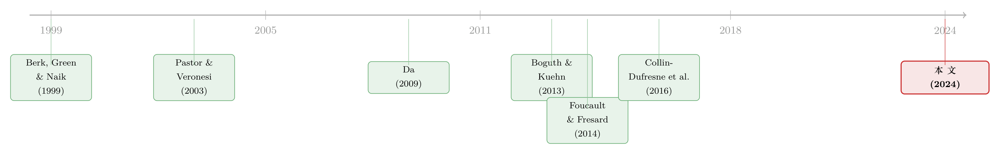

被「学」出来的风险：当贴现率随着信念一起呼吸
本文读的是 Kim, Kuehn & Li (2024, Journal of Financial Economics)：作者把一个企业不知道自己「有多系统性」的设定塞进投资基础资产定价模型，让企业和同行一起用贝叶斯方式去「学」这个未知的风险暴露参数。结果是——贴现率会随着信念内生地起伏，从而压低投资与估值。他们在数据里检验这一连串预测，发现一个标准差的感知风险暴露上升，伴随投资下降 5.6%、托宾 Q 下降 4.6%、隐含资本成本上升 0.45%。而真正点睛的一步，是「向同行学习」。
1 一个老掉牙的失败，和一个被忽略的破绽
先说一个金融学里几乎人尽皆知的尴尬。
消费基础资产定价 (consumption-based CAPM, C-CAPM) 的逻辑干净得近乎优雅：一项资产之所以要给你风险溢价，是因为它的回报和总消费增长「同涨同跌」——当你已经过得不好（消费下滑）时，它偏偏也亏钱，这种雪上加霜才值得补偿。直觉无懈可击。可几十年的早期实证检验，却几乎都没能在数据里找到它（脚注里作者也只能援引 Lettau and Ludvigson (2001) 和 Hansen et al. (2008) 这少数几篇「找到了支持」的论文聊以自慰）。
于是大多数人把 C-CAPM 归进了「漂亮但不灵」的抽屉里。
但本文三位作者盯住了一个被几乎所有人默认、却从未被认真追问的前提：我们一直假设企业（和市场）"知道"自己对宏观风险的暴露有多大。 在标准模型里，那个把企业生产率和消费冲击绑在一起的弹性参数——记作 \(b\)——是一个已知常数。可现实里，有谁真的知道自己公司的生产率对总消费的敏感度是 1.5 还是 3.0？这不是一个能从财报上读出来的数字，它要从历史的共振里一点一点地猜。
接着，一个自然的问题就冒出来了：如果连企业自己都不确定 \(b\) 是多少，只能边走边学，那会发生什么？
2 把「未知」写进模型：两个关键假设
作者对这个未知参数 \(b\) 立了两条规矩，整篇文章都立在这两块基石上。
第一，\(b\) 恒定但未知。 它不随时间变化，但没人观测得到。于是经济中的决策者只能通过贝叶斯更新 (Bayesian updating) 去学它——每多看到一年的数据，就把信念往真相挪一点。
第二，同行业的企业共享同一个 \(b\)。 同一个行业里的公司，对宏观风险的暴露是一样的；它们事后之所以看起来千差万别，只是因为各自踩到了不同的特异性 (idiosyncratic) 冲击。
第二条假设看似不起眼，却是整篇论文的火药。因为它意味着：你想搞清楚自己有多「系统性」，不该只盯着自己的历史，还该去看你同行的历史。 一家公司自己的生产率被特异性噪声搅得面目全非，单看自己，信噪比太低；可把整个行业的横截面摆在一起，那些独立的噪声会相互抵消，共同的那一份系统性暴露反而浮出水面。这就是后文反复强调的「向同行学习」(learning from peers)。
作者先把模型设定写清楚。总消费增长服从
$$ g_{c,t+1} = \mu + \sigma_c\,\eta_{t+1}, $$
其中 \(\eta_{t+1}\) 是独立同分布的标准正态冲击。而企业 \(i\) 的生产率增长，被那个未知的 \(b\) 拴在同一个消费冲击 \(\eta_{t+1}\) 上：
$$ g_{i,t+1} = \mu + b\,\sigma_c\,\eta_{t+1} + \sigma\,\varepsilon_{i,t+1}. $$
请注意这个写法的精巧之处：系统性的那一项 \(b\,\sigma_c\,\eta_{t+1}\) 用的是和消费同一个 \(\eta_{t+1}\)，而 \(\sigma\,\varepsilon_{i,t+1}\) 才是各家自己的命。\(b\) 越大，生产率和消费的协方差越大，企业看起来就越「系统性」——在 C-CAPM 的世界里，这直接翻译成更高的风险溢价。
3 学习的机制：信念如何一步步被更新
这是本文的数学心脏，也是最值得一步步拆开看的地方。
决策者对 \(b\) 抱有一个高斯先验，均值 \(m_{b,0}\)、标准差 \(\sigma_{b,0}\)。每一期，他们看到自己和同行的生产率、以及总消费增长，然后按贝叶斯法则修正信念。因为先验是高斯的、似然也是高斯的，后验始终保持正态，于是只需追踪它的均值 \(m_{b,t}\) 和标准差 \(\sigma_{b,t}\) 两个量。作者在附录里推出了一个漂亮的递归结构。
先看后验均值的更新。这是全文最核心的一个方程，值得把每一块拆开来读：
这个式子说的，其实是一句大白话：新信念 = 旧信念和新证据的加权平均。 而权重的奥妙全在 \(\kappa_t \sigma_{b,t}^2\) 里。当你对参数越没把握（\(\sigma_{b,t}\) 越大），就越愿意听新证据的；当新数据越「有信息量」（\(\kappa_t\) 越大），也越该往证据那边挪。
那个信息量 \(\kappa_t\) 长这样：
$$ \kappa_t = \frac{n_t\,\eta_t^2\,\sigma_c^2}{\sigma^2} \ge 0. $$
这里 \(n_t\) 是本期能观测到的同行数量。看清楚——\(n_t\) 在分子上。 这就是「向同行学习」的全部威力所在：同行越多，\(\kappa_t\) 越大，每一期能榨出的信息越多，信念收敛得越快。一家孤零零的公司只能慢慢熬，而一个行业的横截面，能让大家在同一年里互相印证、迅速逼近真相。
至于本期证据 \(\hat{b}_t\)，它正是把行业内所有公司的生产率「去均值」之后，对消费冲击做的一个横截面回归估计：
$$ \hat{b}_t = \frac{\sigma_c\,\eta_t \sum_{i=1}^{n}(g_{i,t}-\mu)}{n_t\,\sigma_c^2\,\eta_t^2}. $$
而后验精度的递归更简洁，干脆就是精度的逐期累加：
$$ \frac{1}{\sigma_{b,t}^2} = \frac{1}{\sigma_{b,t-1}^2} + \kappa_t. $$
由于 \(\kappa_t \ge 0\)，精度只增不减——信念的方差单调收缩，时间足够长，大家终会把 \(b\) 学到几乎完美。（这也是作者坦承的一个局限：因为 \(b\) 被设为恒定，长期来看不确定性会消失；他们在第 5 节用一个时变的真实 \(b\)、配上卡尔曼滤波 (Kalman filter) 来检验，结论依旧成立。）
4 但真正关键的一步：信念怎么变成了贴现率
到这里，故事还只是统计。真正的反转，是把这套信念动态接到企业的真实决策上。
机制其实只有一句话，但需要慢慢品。当新信息到来、\(m_{b,t}\) 上调，意味着「我感知到的、生产率与消费的协方差变高了」。在消费基础的定价核 (pricing kernel) 下，这个被抬高的协方差直接翻译成更高的风险溢价——哪怕真实的 \(b\) 一动没动。更高的风险溢价就是更高的贴现率，而更高的贴现率会压低新投资项目的现值，于是企业减少投资、估值比率（托宾 Q）随之走低。
这就是本文反复要讲透的那个核心：不是真实风险在动，是被「学」出来的感知风险在动；它通过贴现率这个总闸，同步地拨动了投资与估值。 贴现率本就是资产定价的中枢（关于贴现率为何是这门学问的中心议题，可参见《贴现率：资产定价的中心议题》），而这篇论文给了它一个全新的、内生的驱动源——参数学习。
作者用 2006–2009 年信念变化与 2007–2010 年投资变化的行业截面来直观展示这件事。大衰退 (Great Recession) 期间消费骤降，逼出了信念的剧烈修正：那些感知风险暴露飙升的行业——邮轮、住宅建造、钢铁——投资显著塌缩；而感知风险下降的行业——高校、托育与养老、医院——反而加大了投资。一张图，把「学习如何重塑企业政策」讲得明明白白。
5 数据与检验：它真的能在现实里站住吗
光有故事不够。作者把模型预测拉到 1964–2021 年的 CRSP-Compustat 合并样本里硬碰硬地检验。
识别同行用了三套行业分类互为补充：SIC、NAICS，以及 Hoberg and Phillips (2016) 的文本相似度分类 TNIC。他们先确认了那条立模型的命脉假设——同行业的生产率确实「共振」：在各行业内部，第一主成分平均解释了 35.9% 的生产率方差。共同的那一份系统性，是真实存在的。
主回归的结果，强且符号正确：
- 投资率与托宾 Q 对后验均值风险暴露 \(m_{b,t}\) 显著为负，达到
1%显著性水平，且在控制了一众已知横截面变量后依然成立。 - 经济量级上：感知风险暴露每上升一个标准差，平均带来投资下降
5.6%、托宾 Q 下降4.6%。 - 把贴现率换成两个代理变量——基于会计信息的隐含资本成本 (implied cost of capital, ICC，沿用 Hou et al. (2012) 的算法) 与已实现股票回报——同样得到正向关系：一个标准差的 \(m_{b,t}\) 上升，对应年化 ICC 上升
0.45%、已实现回报上升0.71%。
接着是全文我最欣赏的一组实验——直接拷问「向同行学习」到底重不重要。作者构造了三种替代的学习方式：(1) 只学自己的历史；(2) 学自己加上随机指派的「假同行」；(3) 只学行业同行、完全无视自己的历史。结果一针见血：前两种不含真实同行信息的方式，信念与企业变量之间的关系统统不显著；唯独第三种纯靠同行的信念，依然强力预测投资、估值与资本成本，几乎复刻了基准结果。
换句话说，信息的溢出是跨同行发生的，把同行从学习里抽掉，整个机制就熄火了。这一步，把「同行业共享 \(b\)」从一条方便的假设，坐实成了数据里看得见的事实。
6 结构估计：用八个矩去钉住六个参数
模型最终要用模拟矩方法 (simulated method of moments, SMM) 来量化，这一脉承自 Nikolov and Whited (2014) 与 Hennessy and Whited (2007)。生产函数是规模报酬递减的
$$ Y_{i,t} = X_{i,t}^{1-\alpha} K_{i,t}^{\alpha},\qquad 0<\alpha<1, $$
配上凸性资本调整成本和上文那套贝叶斯学习。作者要估的是六个参数（折旧率、资本份额、调整成本、特异性波动、风险暴露 \(b\)、定价核里的风险价格），用八个矩来识别：投资率、股票回报、托宾 Q、以及后验均值 \(m_{b,t}\) 各自的均值与方差。
模型对这些矩的拟合相当漂亮：
- 投资率在模型与数据里都平均约
25%，标准差约21%。 - 股票回报的波动，数据里是
58%，模型能给到53%——靠的是56%的高折旧率、92%的特异性波动，和一个2.15的调整成本参数（这意味着企业把大约6.4%的产出花在资本调整上）。大调整成本，正是「投资波动远小于股票回报波动」这道楔子的来源。 - 平均超额回报
10%，对应一个2.35的风险价格；平均托宾 Q 约1.9，对应0.75的资本份额。
值得一提的是，相比忽略参数不确定性的既有文献（如 Nikolov and Whited (2014)），这个模型能内生地造出一个波动的托宾 Q——因为估值比率的时间变化，本质上反映的就是贴现率的时间变化，而学习恰恰为贴现率注入了波动。基准设定里每个行业取 5 家公司（贴近数据均值）；当同行增加到 10 家，回报与 Q 的波动都会下降，因为信号更多、学得更快。这条比较静态，本身就是「同行越多、学习越快」最干净的注脚。即便如此，本文模型对回报与 Q 波动的解释力，仍显著优于那些无视参数不确定性的前作。
一个容易被忽略却很关键的细节：作者在度量投资、托宾 Q 与生产率时，显式地把无形资本算了进去（沿用 Eisfeldt and Papanikolaou (2013) 与 Peters and Taylor (2017)）。在一个无形资产占比越来越高的时代，这一步让「生产率增长」的度量不至于系统性失真。
7 文献脉络
把这篇论文放回它生长的那条藤蔓上，会看得更清楚。
最早，投资基础资产定价 (investment-based asset pricing) 这一脉，从 Berk et al. (1999) 出发，经 Gomes et al. (2003)、Carlson et al. (2004)、Zhang (2005)、Kuehn and Schmid (2014) 一路推进，反复说明一件事：股票与债券回报里观察到的种种规律，都能从企业的最优投资政策里长出来。
另一条线，是参数学习 (parameter learning) 与资产定价。Pastor and Veronesi (2003)、Alti (2003) 研究的是对「生产率漂移/盈利能力」的学习；Collin-Dufresne et al. (2016) 在一般均衡里证明，对支配经济的参数的学习，会内生地造出那些原本看似谜团的资产定价规律。
第三条线，是消费现金流贝塔。Bansal et al. (2005)、Da (2009)、Boguth and Kuehn (2013) 揭示，横截面预期回报的离散，根源在于消费增长与证券现金流的协同。

本文的位置，恰好在这三条线的交汇处：它借用投资基础模型的骨架，把消费现金流贝塔重铸成一个贝叶斯学习出来的对象，再用一个其他人没怎么碰过的维度——横截面的同行学习——把信息溢出做实。这一点上，它和 Foucault and Fresard (2014)「企业从同行股价里学习」遥相呼应，但走的是另一条路：后者靠的是投资者的私有信息与相关需求，而本文不需要任何私有信息，纯靠「同行业共享风险暴露」这条新古典的逻辑，就把同行学习给理性化了。
评论与延伸（Q&A + 研究方向）
(a) 几个可能的疑问
Q：这和过去那些"现金流贝塔"（如 Da 2009）到底差在哪？
差在贝塔是怎么来的。过去的现金流贝塔是一个（大体）固定的、用历史回归估出来的暴露。本文的贝塔是信念——它会随着每一期新数据被贝叶斯更新，因而内生地随时间起伏，而且这份起伏靠的是行业横截面而非单家公司的时间序列。是「学出来的、会动的贝塔」。
Q：真实风险暴露明明没变，凭什么投资和估值会动？这不是无中生有吗？
动的不是真实风险，是感知风险。在消费定价核下，决策者相信的协方差变了，风险溢价（即贴现率）就跟着变，真实现金流贴现回来的现值自然变。这恰恰是本文最反直觉、也最有意思的地方：一个恒定的参数，照样能通过「学习」制造出贴现率与估值的时间变化。
Q："同行业共享同一个 b"这个假设，会不会太强？
它确实是核心假设，但作者没让它停在纸面上。一是直接证据：行业内第一主成分解释了
35.9%的生产率方差，共性真实存在。二是那组三选一的学习实验：只有含真实同行的信念能预测企业变量，随机假同行和纯自学都失效——反过来佐证了「同行确实共享某种东西」。
Q：信念的方差单调收缩，岂不是说学久了不确定性就归零、机制就失效了？
在基准设定（\(b\) 恒定）里确实如此，这是作者自己承认的局限。但第 5 节把真实 \(b\) 改成一个 AR 过程、用卡尔曼滤波重估，聚焦于「系统性风险无条件均值」这个天然恒定的对象，主要结论依然成立。所以机制不靠「永远学不完」来续命。
Q：会不会其实是对"漂移/盈利能力"的学习在起作用，而不是对"风险暴露"的学习？
这是最该担心的混淆。作者专门扩展模型，让决策者同时学漂移和风险暴露。结果是：关于漂移的信念确实预测企业变量（和前人一致），但在控制了漂移学习之后，风险暴露信念依然是强预测变量。两条腿都站得住。
Q：这些回归会不会只是"虚假回归"（spurious regression）？
这是金融实证的老雷区（Ferson et al. (2003) 就警告过）。本文的一道防线是：回归系数并未被纳入 SMM 的估计目标，但结构模型却能定量地复现出投资、Q 对信念的负向响应、以及资本成本的正向响应——一个没拿这些系数去拟合的模型却能生成它们，比单纯一条显著的 t 值更难用「偶然」来解释。
(b) 几个可能的研究问题与提案
1. 把「学习出来的风险暴露」搬到公司债与信用利差上
【经济故事】本文的贴现率只作用在股权估值上。但如果一个行业被「学」得越来越系统性，它的违约风险溢价、信用利差是不是也该同步走阔？Kuehn and Schmid (2014) 本就是投资基础的公司债定价，把贝叶斯学习的 \(m_{b,t}\) 接进去，可以检验感知风险暴露上升是否预测信用利差扩大。
【可行性】中。数据齐备（TRACE + Compustat + 本文的信念估计可复刻），识别上要小心把「漂移学习」和「真实信用基本面」剥离干净，但思路自然、doable。
2. 外资持有人会改变一个行业的「被学习速度」吗
【经济故事】本文的信息量 \(\kappa_t\) 由可观测同行数 \(n_t\) 驱动。如果一个行业里有更多跨境的、信息处理更强的外资机构投资者，是否相当于增加了有效的「同行信号」、让信念收敛更快、贴现率反应更灵敏？
【可行性】中偏低。需要 FactSet/13F 级别的持有人数据并构造行业层面的外资暴露，识别要靠指数纳入之类的外生冲击，挑战在于把「学习速度」与「资金流压力」区分开，但方向有意思。
3. 流动性是不是另一条"被学习的贴现率"通道
【经济故事】本文把感知风险暴露映射到贴现率。一个平行的问题是：当一个行业被感知为更系统性时，它的股票/债券流动性是否同步恶化（做市商也在「学」这份暴露）？这会给贴现率叠加一个流动性溢价的放大器。
【可行性】中。可用 bid-ask spread、Amihud 非流动性等指标，配合本文信念变量做面板回归，识别难点在于流动性与风险暴露的内生同移，需要工具或事件冲击。
4. 大衰退之外：用每一次"消费骤变"做事件研究
【经济故事】作者用大衰退作为信念剧烈修正的窗口。能否系统化地把每一次总消费的大幅意外（如 2020 疫情）当作准自然实验，检验「感知风险暴露跳变 → 投资塌缩」的因果链是否稳健？ 【可行性】高。数据现成，事件定义清晰，是本文图 1 思路的自然推广，最容易上手。
我的判断
贡献。 这篇论文真正漂亮的地方，不在于又估了一个投资基础模型，而在于它给「C-CAPM 为什么失灵」提供了一个建设性的、可检验的重写：也许问题从来不是消费风险不重要，而是我们（和企业自己）根本不知道自己有多暴露，只能边走边学；而这份「学」本身，就会通过贴现率内生地搅动投资与估值。把消费现金流贝塔重铸为一个贝叶斯信念、再用「横截面同行学习」把信息溢出做实，这两步都很扎实。那组「三选一学习实验」尤其有说服力——它把一个本可以停留在假设层面的东西，逼到了数据面前。
对识别的担忧。 我最在意两点。其一，\(m_{b,t}\) 本身是模型估出来的、依赖一整套参数与行业分类的构造物，它和真实风险基本面之间的边界，终究比一个外生工具要模糊；作者用「控制漂移学习」「随机假同行」等做了大量防守，但回归终究是相关性叙事，而非干净的因果。其二，行业分类的选择（SIC/NAICS/TNIC）对「谁是同行」至关重要，而文献（如 Kahle and Walking (1996)）早就指出分类口径会实质影响结果——三套分类的一致性是个安慰，但同行的「真实边界」仍是这套机制的阿喀琉斯之踵。
后续想看到什么。 我最想看的，是把这个机制推到信用市场和外资持有人那两个方向去——尤其是：如果一个行业的「被学习速度」真的取决于它的投资者构成，那么资产价格对宏观冲击的反应快慢，就不只是基本面的事，而是信息结构的事。这会把「学习」从一个估值故事，升级成一个关于市场为何有时反应过度、有时又麻木迟钝的更普遍的解释。
参考文献
- Berk, J.B., Green, R.C., Naik, V. (1999). Optimal investment, growth options, and security returns. Journal of Finance 54, 1553–1607.
- Bansal, R., Dittmar, R.F., Lundblad, C.T. (2005). Consumption, dividends, and the cross section of equity returns. Journal of Finance 60, 1639–1672.
- Pastor, L., Veronesi, P. (2003). Stock valuation and learning about profitability. Journal of Finance 58, 1749–1789.
- Da, Z. (2009). Cash flow, consumption risk, and the cross-section of stock returns. Journal of Finance 64, 923–956.
- Boguth, O., Kuehn, L.A. (2013). Consumption volatility risk. Journal of Finance 68, 2589–2615.
- Foucault, T., Fresard, L. (2014). Learning from peers' stock prices and corporate investment. Journal of Financial Economics 111, 554–577.
- Kuehn, L.A., Schmid, L. (2014). Investment-based corporate bond pricing. Journal of Finance 69, 2741–2776.
- Nikolov, B., Whited, T.M. (2014). Agency conflicts and cash: estimates from a dynamic model. Journal of Finance 69, 1883–1921.
- Collin-Dufresne, P., Johannes, M., Lochstoer, L.A. (2016). Parameter learning in general equilibrium: the asset pricing implications. American Economic Review 106, 664–698.
- Peters, R.H., Taylor, L.A. (2017). Intangible capital and the investment-q relation. Journal of Financial Economics 123, 251–272.
- Lettau, M., Ludvigson, S. (2001). Resurrecting the (C)CAPM: a cross-sectional test when risk premia are time-varying. Journal of Political Economy 109, 1238–1287.